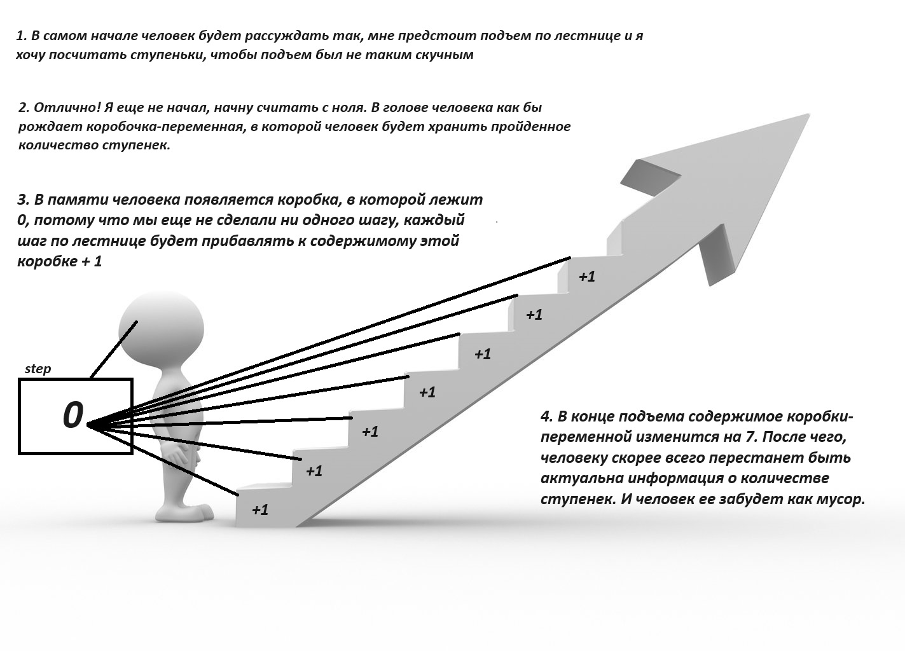
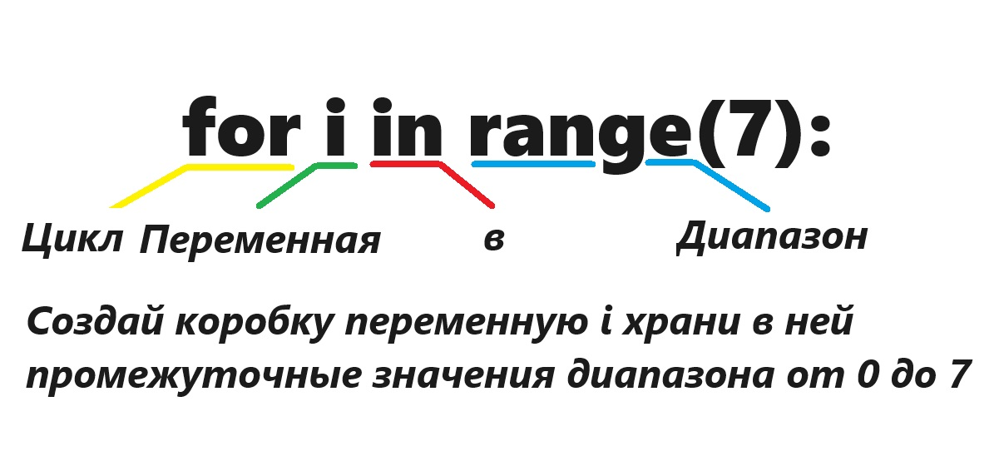
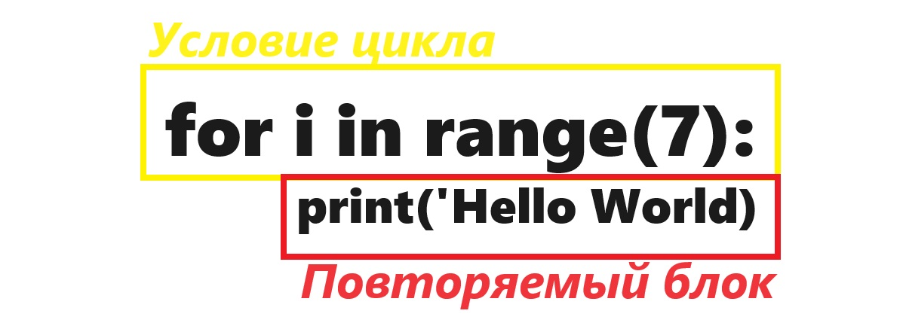
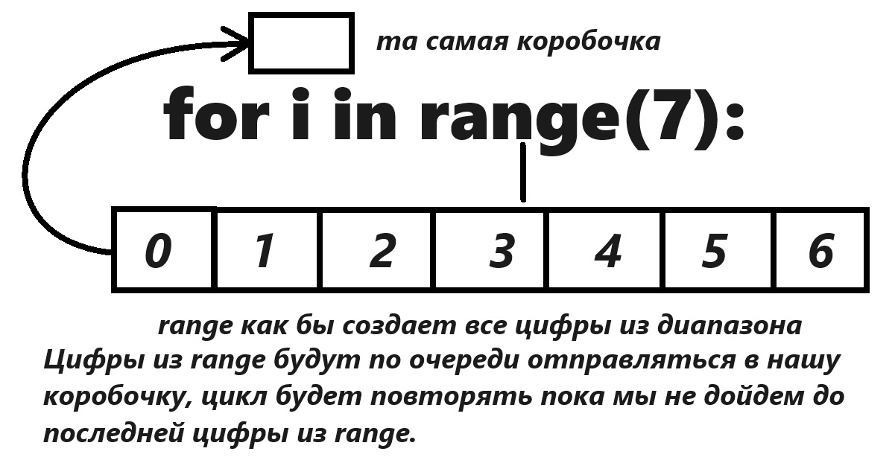

Добро пожаловать в 8 урок!
Давайте немного пофантазируем, вы с другом решили сыграть в игру. Друг завязал себе глаза, он совершенно ничего не может видеть, а вы должны им управлять, подсказывать ему как дойти из точки А в точку Б. Разрешенные команды - вперед/назад/вправо/влево. Перед вами большой прямой участок и вы говорите другу - "сделай шаг вперед". Он слушает и выполняет вашу команду. И вы продолжаете...
Сделай еше шаг. (делает шаг)
Сделай еше шаг. (делает шаг)
Сделай еше шаг. (делает шаг)
Сделай еше шаг. (делает шаг)
Сделай еше шаг. (делает шаг)
Сделай еше шаг. (делает шаг)
Сделай еше шаг. (делает шаг)
Сделай еше шаг. (делает шаг)
Сделай еше шаг. (делает шаг)
Сделай еше шаг. (делает шаг)
Сделай еше шаг. (делает шаг)
Слушай говорите Вы - "Я устал, мне надоело играть". Давай во что-нибудь другое поиграем.
Иногда нас очень сильно утомляет когда мы должны повторять одно и тоже действие раз за разом, например - когда у нас что-то не получается или когда мы учим стихотворение. Каким был бы прекрасным мир, если бы можно было пропустить или хотя бы ускорить эти повторения. Можно ли было пройти ту игру с завязанными глаза - проще? Конечно!
В русском языке у нас есть несколько оборотов речи, которые мы используем для облегчения однотипных действий. Мы можем сказать нашему другу с завязанными глазами.
1 - Сделай 10 шагов вперед. Такой прием работает если мы знаем сколько именно шагов нужно сделать. Например - я закрыл дверь на три оборота - проверни ключ три раза. Я живу на 7 этаже - пройди семь пролетов.
2 - Делай шаги вперед, пока я не скажу стоп. В этом случае вы как бы обозначаете условия при которых нужно закончить с повторами. Например: Мой полы - пока они не станут чистыми. Давай разговаривать по мобильному - пока у меня не сядет телефон. Жди трамвая, пока он не приедет.
Эти конструкции помогают нам не повторять одно и тоже как попугай, а четко сформулировать условие повторения сэкономив время. В программировании такие конструкции - называются циклами, и делают тоже самое, помогают сформулировать условие повторения инструкций. Что также очень сильно помогает насм экономить время и уменьшает количество повторяющегося кода. Еще циклы помогают объединить простые инструкции в нечти невероятно красивое.

Сегодня мы с Вами поговорим о конструкции (команде или заклинании) языка python, которая помогает создать цикл с заранее известным количеством повторов. То есть наш первый рассмотренный вариант. И что бы сначала представить у себя в голове подобный процесс, научимся его понимать у себя в голове.
Итак перед Вами лестница.
Мой пример, основан на необъяснимом желании человека посчитать количество ступенек во время подъема. И если вы так не делали - мне искренне Вас жаль). Значит представим что перед нами лестница, мы будем по ней подниматься и считать количество ступенек. Казалось бы, что тут может быть сложного? А на деле ого-го-го как сложно:
Во первых - вам должен быть известен счет, вы должны знать цифры и уметь их складывать.
Во вторых - вам нужна память, где вы будете хранить пройденное количество ступенек.
Если вы не знаете счета, то ступеньки Вам посчитать будет невозможно. А если у Вас память как у рыбки, то с каждой пройденной ступенькой, вы будете забывать сколько уже прошли. Если в вашей душе не отзывается пример с лестницой, то возможно вы считали фонари, прагали по красным плиточкам считали проезжающие мимо машины ну или на худой конец делали приседяния.

Обращу ваше внимание еще раз - человеку нужно уметь считать и обладать памятью, чтобы создавать коробочки-переменные, для того, что бы в них хранить информацию о прошлом действии. Если Вам этот пример непонятен. Пожалуйста перечитайте его еще раз, или напише мне. Не идите вперед, пока не поймете этот пример.
Как цикл выглядит на языке python --> for i in range(7):
И по началу такая конструкция может даже немного напугать, своей непонятностью. Эту конструкцию нам сначала нужно перевести на русский язык, что бы начать ее понимать, а затем разобраться с ее работой.

Да, мне известно, что дословно c английского for - нельзя перевести именно как "цикл", но я сознательно упрощаю. Поставим себе задачу повторить print('Hello World') - 7 раз! Какую последовательность действий мне нужно записать.
1. Сначала я сообщу что собираюсь использовать цикл for
2. Затем прямо как у человека при подъеме по лестнице нам для решения задачи потребуется коробка-переменная назову ее i (но можно ей давать и другие имена)
3. Дальше я скажу что нужно складывать в это коробку все числа в (in) диапазоне (range(7)) от 0 до 7.
4. Затем я поставлю двоеточие для того, чтобы показать, что закончил писать цикл:
5. Все что дальше будет писать с отступами будет вынуждено повторяться, находясь в цикле.
<
Самое сложное место в этом цикле, это конструкция range(). Мы можем с Вами успростить ее понимание придумав для нее роль. Это просто некая команда в питоне - которая умеет считать.
Если мы пишем range(7) - то она будет считать от 0 до 7 (последнее число 7 в счет не входит) --> Если число старта не задано, счет всегда начинается с 0.
Если мы пишем range(1,10) - то она будет считать от 1 до 10 (последнее число 10 в счет не входит)
Если мы пишем range(1, 100, 2) - то она будет считать от 1 до 100 с шагов в 2 (последнее число 100 в счет не входит) --> 1,3,5,7,9,11,13 и так далее.
И наконец нам нужно взглянуть как происходит перебор значений внутри нашей переменной.
